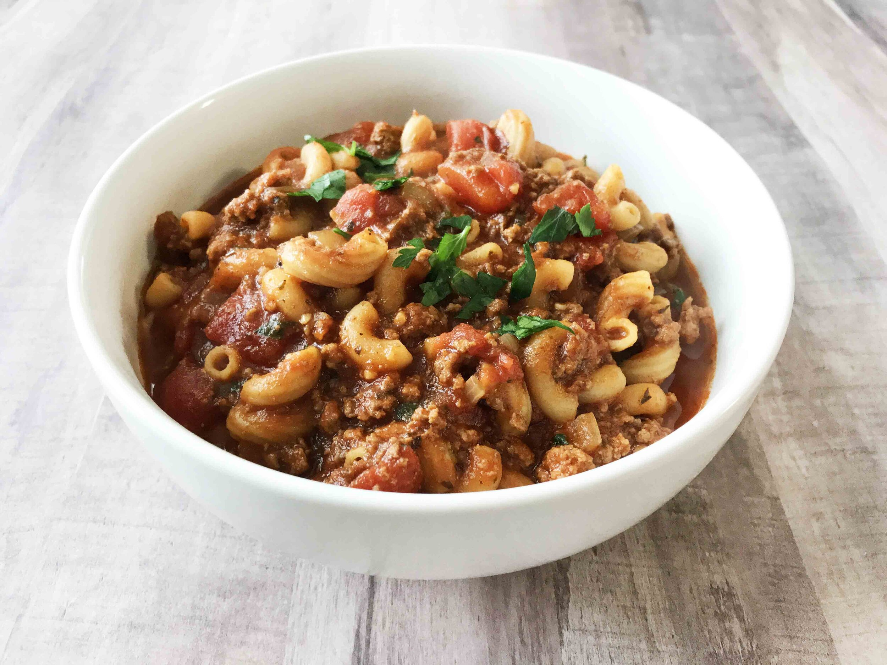

Goulash

Description
Perfect mishmash of common ingredients that might be laying around. Always makes for a fine dinner.
Serves 10
Prep: 5 minutes
Cook: 30 minutes
Total: 35 minutes
Ingredients
- 1 tbsp olive oil
- 1 cup onion, diced
- 1 green bell pepper, diced
- 2 lbs. ground beef
- 3 tsp garlic, minced
- 2 15 oz cans tomato sauce
- 2 15 oz cans diced tomatoes
- 3 cups beef broth
- 3 tbsp Worcestershire sauce
- 2 tsp seasoned salt
- 2 tbsp Italian seasoning
- 3 bay leaves
- 2 cups elbow noodles
- 1 cup cheddar cheese, shredded
Directions
- Add olive oil to large pot over medium-high heat. Add in the onion, bell pepper and ground beef then cook until beef is no longer pink. Drain any excess fat and return pot to stove top. Add garlic and stir until fragrant(about 30 seconds).
- Pour in tomato sauce, diced tomatoes, beef broth, Worcestershire sauce, seasoned salt, Italian seasoning, bay leaves and dried elbows. Stir and bring mixture to a boil. Reduce heat to a light boil and stir occasionally until the pasta is tender, about 20 minutes.
- Remove bay leaves and stir in cheddar cheese just before serving.